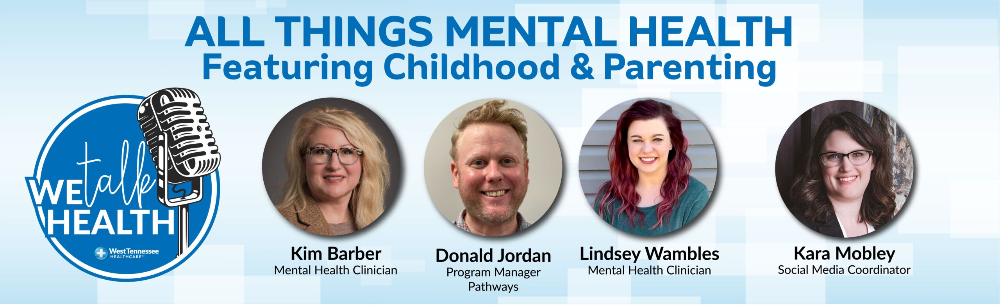

Why Prioritizing Mental Health in Childhood and Parenting is Crucial

We all know that mental health is essential to a happy and fulfilling life. Unfortunately, we don't always pay enough attention to our mental health, especially in our younger years. However, research shows how crucial it is to prioritize mental health in childhood and parenting.
The story of Emily and her daughter Laura exemplifies why prioritizing mental health in childhood and parenting is crucial. Emily, a single mother, was dedicated to providing everything possible to make her daughter's life as comfortable as possible. She was so focused on this that she worked for long hours every day, sometimes sacrificing her own sleep to provide her daughter support. But despite her best efforts, Laura started experiencing anxiety and depression symptoms at a young age. Emily took her daughter to a mental health professional, who diagnosed Laura with Generalized Anxiety Disorder (GAD). Emily realized that while she had been providing Laura with all the material comforts, she had inadvertently neglected Laura's mental health. This realization led her to prioritize Laura's mental health, and she started making arrangements to provide her with regular mental health support.
Here are some quantitative facts about mental health in childhood:
- About one in six children aged 2-8 (17%) had a diagnosed mental, behavioral, or developmental disorder in 2016, according to the CDC.
- Half of all mental illnesses start by age 14, and 75% by age 24, according to the National Institute of Mental Health.
- The prevalence of anxiety and depression in children and adolescents has been increasing in recent years. In 2017, the NIH reported that 13% of adolescents ages 12-17 had at least one major depressive episode in the past year.
- According to the American Psychological Association, parental stress and mental health have a significant impact on children's mental health and wellbeing.
An
Why Prioritizing Mental Health in Childhood and Parenting is Crucial: The Impact on Our Children's Future
Three Key Takeaways
- The earlier the intervention, the better: Early intervention for mental health issues can significantly improve long-term outcomes. As parents, we must be vigilant for signs of anxiety and depression in our children and provide them with appropriate support as early as possible.
- The impact of parents' mental health: Our mental health, as parents, has a significant impact on our children. It is essential to prioritize our mental health to provide the best possible environment for our children's growth and development. Seeking professional support when needed can make all the difference.
- It takes a community to raise a child: Supporting children's mental health is not just a parent's responsibility alone. Schools, communities, and mental health professionals all need to work together to provide the best possible support for our children's mental health.
and Case Studies
Here are some examples of personal anecdotes and case studies that illustrate the importance of prioritizing mental health in childhood and parenting:
- Ben had been struggling with depression and anxiety for years and almost decided to quit high school. Still, a counselor convinced him to stay and guided him through his struggles. Ben now looks back and says that the counselor saved his life.
- Amy's parents recognized that she was struggling with anxiety and sought help from a mental health professional. Amy attended therapy, learned coping mechanisms, and developed techniques to build resilience, skills that have been invaluable to her throughout her life.
- Martha's son was diagnosed with ADHD; after struggling, they sought professional help. They learned about the importance of structure in his homework and study time, bought educational aids, and talked to his teachers about his condition and how to support him. These changes led to a decrease in frustration and improved his academic performance.
Practical Tips
- Make mental health a regular topic of conversation with your child. Let your children know they can turn to you when they feel overwhelmed, anxious, and depressed.
- Be observant of your children's mood and behavior. If you see any signs of anxiety or depression, act on them immediately.
- Encourage your child to engage in physical activity, healthy eating, and adequate sleeping habits.
- Seek help if you need it. Take advantage of mental health professionals, such as therapists, counselors, psychiatrists or psychologists.
References
- https://www.hospisianephrocare.com/podcast-wetalkhealth-episode-158-all-things-mental-health-featuring-childhood-parenting/
Hashtags and SEO Keywords
- #mentalhealthawareness #mentalhealth #parenting #childhood #anxiety #depression #earlyintervention #communitysupport
- SEO Keywords: mental health, childhood, parenting, early intervention, community support, anxiety, depression
Category
Health and Wellness
Curated by Team Akash.Mittal.Blog
Share on Twitter Share on LinkedIn